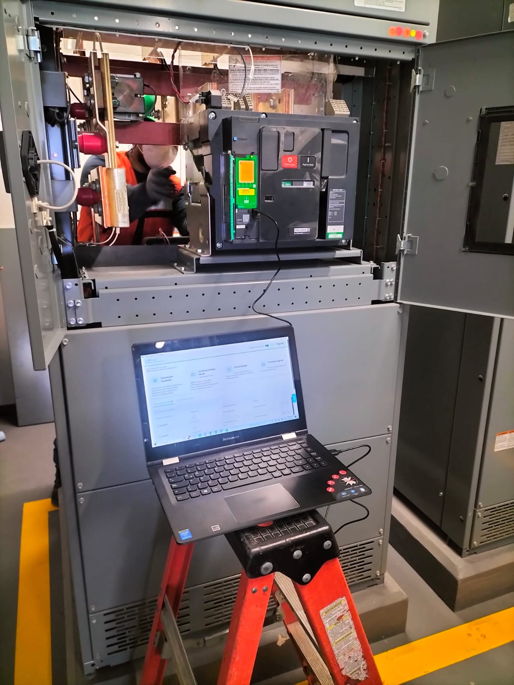
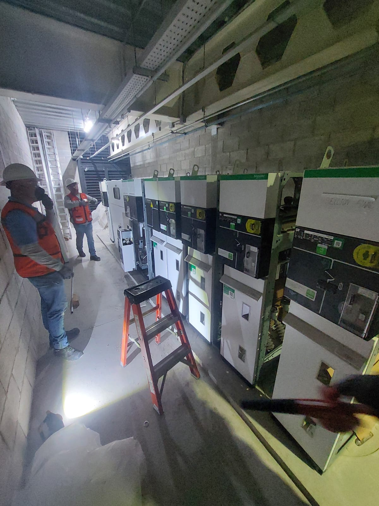
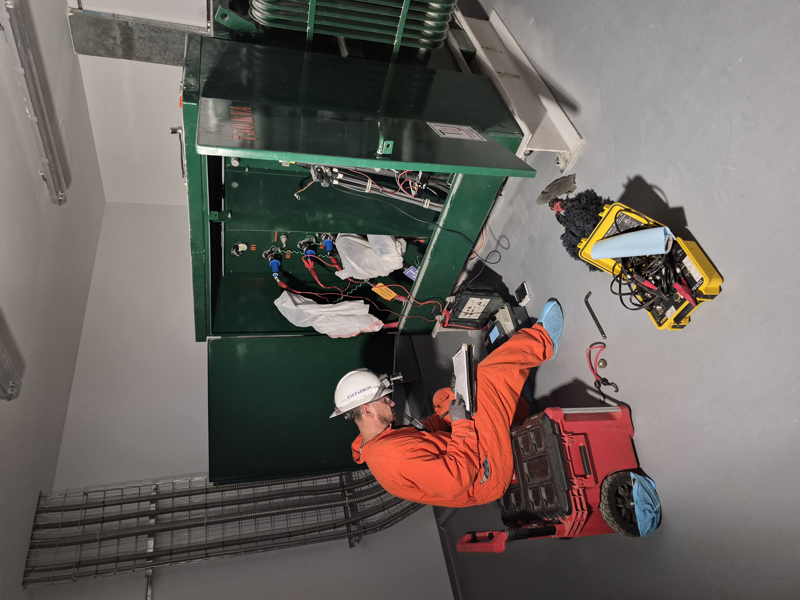

Proyectos
Experiencia en campo.
A lo largo de más de 20 años de operación, ESEPADRÓN ha participado en proyectos de mantenimiento, diagnóstico y mejora de instalaciones eléctricas industriales en distintos sectores.









¿Tienes un proyecto similar?
Cuéntanos qué necesitas y te damos un diagnóstico.
Solicitar cotización →